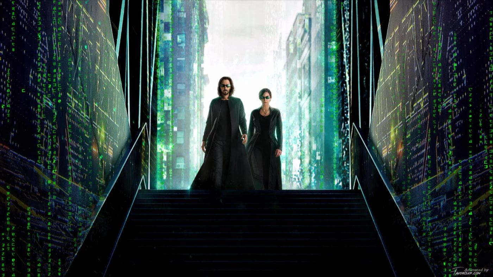
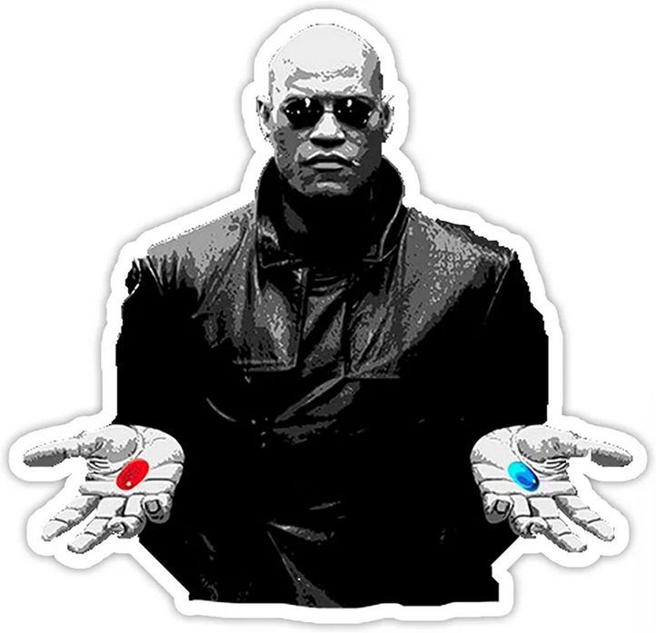
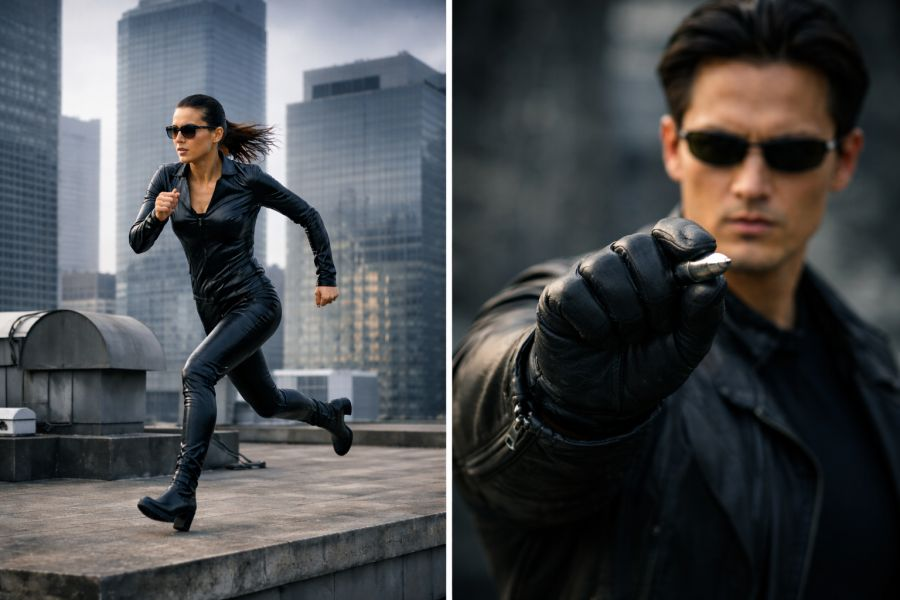

Mátrix: Új titkok 27 év után amiket még biztosan te sem vettél észre!

FilmA Mátrix már az első perceiben elképesztően sűrű jelentéshálót épít fel. A nyitójelenet nemcsak a történetet indítja el, hanem rögtön több fontos motívumot is felvillant: az árulás lehetőségét, a vallási szimbolikát, az informatikai utalásokat és Neo, illetve Trinity kapcsolatának előkészítését.
Az első párbeszéd Cypher és Trinity között már önmagában feszültséget teremt. Cypher megjegyzései nemcsak féltékenységet sejtetnek, hanem előrevetítik későbbi árulását is. Trinity bizonytalansága, amikor rákérdez a vonal biztonságára, finom, de fontos jelzés: már itt megjelenik a bizalmatlanság, amely később kulcsszerepet kap.

A film ezután a számok és szimbólumok világába vezet. A 303-as szobaszám első pillantásra jelentéktelen részletnek tűnik, valójában azonban egyszerre hordoz vallási és technológiai jelentést. Trinity neve a Szentháromságra utal, míg a 303-as kód az informatikában átirányítást jelent — akárcsak a filmben, ahol a telefonvonalak szó szerint átjárót nyitnak a Mátrix és a valóság között. Ugyanígy beszédes a hotel neve is: a Heart of the City egyszerre utal a rendszer középpontjára és Trinity érzelmeire, amelyek később a történet egyik legfontosabb mozgatórugójává válnak.
„Wake up Neo!
The Matrix has you...
Follow the white rabbit...
Knock knock Neo."
Neo első megjelenése szintén tele van jelentéssel. Alvó állapotban látjuk meg először, ami rögtön ráerősít a film egyik alapmotívumára: az ébredésre. Az „Ébredj fel, Neo” üzenet egyszerre szól szó szerint és átvitt értelemben is.
Nemcsak arról van szó, hogy elaludt a gép előtt, hanem arról is, hogy fel kell ismernie a valóság mögötti illúziót. A „Kövesd a fehér nyulat” utalás pedig egyértelműen az Alice Csodaországban történetét idézi meg: Neo olyan útra lép, amely teljesen új világba vezeti.
A film különösen tudatosan bánik a nevekkel és tárgyakkal is. Neo lakásszáma, a 101, egyszerre idézi a bináris kódot, a beavatás kezdetét és Orwell világát. A könyv, amelyben az illegális szoftvert rejti, Jean Baudrillard Szimulákrumok és szimuláció című műve, amely a valóság és a másolat összemosódásáról szól. Ez tökéletesen összecseng a Mátrix alapgondolatával: azzal, hogy az ember egy mesterséges, mégis valóságosnak ható világban él.
Az egyik legérdekesebb állítás, hogy a nyitójelenet hátterében talán nem is Cypher árulása áll. Egy később előkerült produkciós anyag szerint Morpheus korábbi hackertevékenységei miatt a hatóságok már rendelkezhettek olyan nyomkövető technológiával, amely végül Trinity helyzetét is felfedte. Ez új megvilágításba helyezi a film nyitányát: lehet, hogy a történet nem árulással, hanem Morpheus vakmerőségének nem várt következményeivel indul.

Mindez jól mutatja, hogy a Mátrix nem egyszerűen akciófilm, hanem tudatosan felépített szimbólumrendszer. A számok, nevek, helyszínek és háttérelemek nem puszta díszletek, hanem a film mélyebb jelentésrétegeinek részei. Talán éppen ezért időtálló: minden újranézéskor képes újabb értelmezéseket kínálni, és mindig felteszi ugyanazt a kérdést — vajon észrevesszük-e, hogy van választásunk?

Füzesi Ákos
2026. március 24. 10:58Kovács László
2026. március 24. 12:00